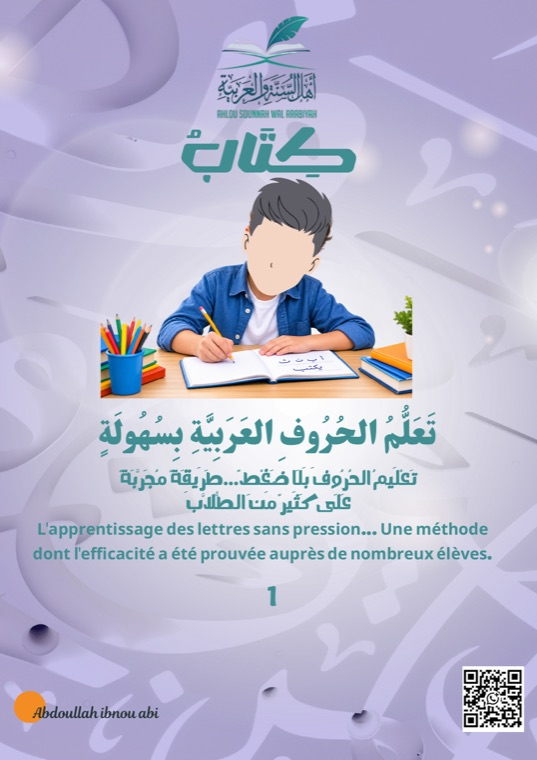
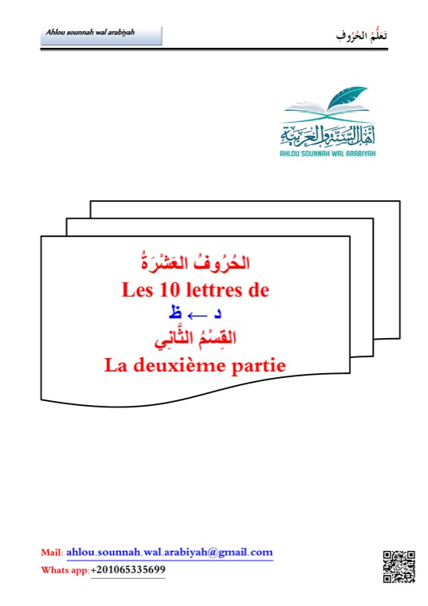
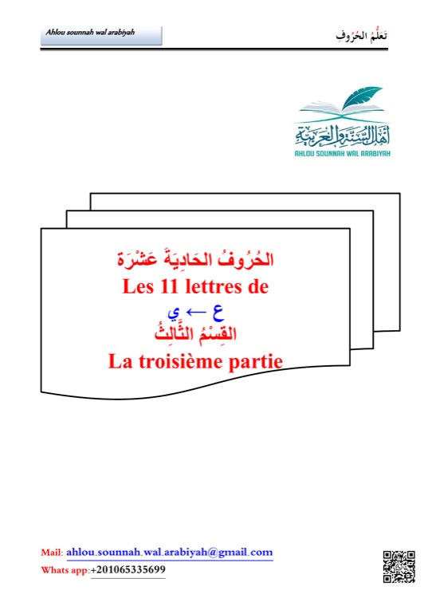
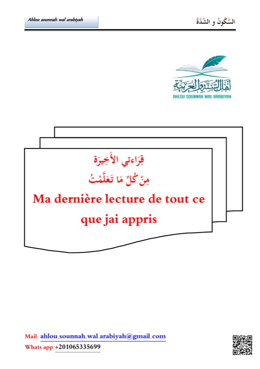

Fascicule 1
أ ← خ · 7 lettres
Les premiers pas dans l'écriture arabe
Découverte des 7 premières lettres, de leur tracé et de leurs premiers sons.
Méthode d'apprentissage de l'arabe
تَعَلُّمُ الحُرُوفِ العَرَبِيَّةِ بِسُهُولَةٍ
L'apprentissage des lettres sans pression … une méthode progressive, pensée pas à pas, dont l'efficacité a été prouvée auprès de nombreux élèves — enfants comme adultes, débutants complets comme familles.
La méthode
Chaque notion s'appuie sur la précédente : les lettres, puis les voyelles, les prolongations, le tanwīn, le sukūn et la shadda — toujours en couleur, toujours accompagnées d'exercices de tracé et de lecture.
Une lettre à la fois, du tracé isolé aux mots complets, sans jamais brûler d'étape.
Chaque élève avance à son propre rythme : aucune notion imposée avant d'être prête.
Des repères visuels clairs — harakat, tanwīn, prolongations — pour mémoriser sans effort.
Une approche déjà testée et validée auprès de nombreux élèves, en classe comme à la maison.
Reconnaître et tracer chaque lettre de l'alphabet arabe.
Retrouver la lettre en début, au milieu et en fin de mot.
Fatha, damma, kasra et moudoud pour donner du son aux lettres.
Les dernières nuances pour lire n'importe quel mot avec justesse.
Une page de lecture dédiée pour consolider tous les acquis.
Programmes
Chaque fascicule reprend le même schéma rassurant : tableau de la lettre, cases d'écriture, mots illustrés et une page de lecture.

أ ← خ · 7 lettres
Découverte des 7 premières lettres, de leur tracé et de leurs premiers sons.

د ← ظ · 10 lettres
10 nouvelles lettres pour renforcer les automatismes acquis dans le premier cahier.

ع ← ي · 11 lettres
Les 11 dernières lettres pour clore l'apprentissage des 28 lettres arabes.

السُّكُونُ والشَّدَّة
Tanwīn, sukūn, shadda et premiers textes de lecture, en couleur.
Pour qui ?
Pensée pour être structurée et progressive, la méthode s'adresse aussi bien aux plus jeunes qu'aux adultes qui découvrent l'arabe pour la première fois.
Dès le plus jeune âge, grâce à des repères visuels et des couleurs adaptées.
Adolescents et adultes qui n'ont jamais lu ou écrit l'arabe.
Un support simple pour apprendre ensemble, à la maison, à son propre rythme.
Écoles, mosquées et cours particuliers en quête d'un support clair et progressif.
Aperçu des supports
Tableaux de lettres, harakat, prolongations et mots à lire — un aperçu fidèle de ce que l'élève retrouve dans chaque fascicule.
Envie de commencer ?
Une question sur la méthode, envie de vous procurer les fascicules ? Contactez-nous, nous répondons avec plaisir.